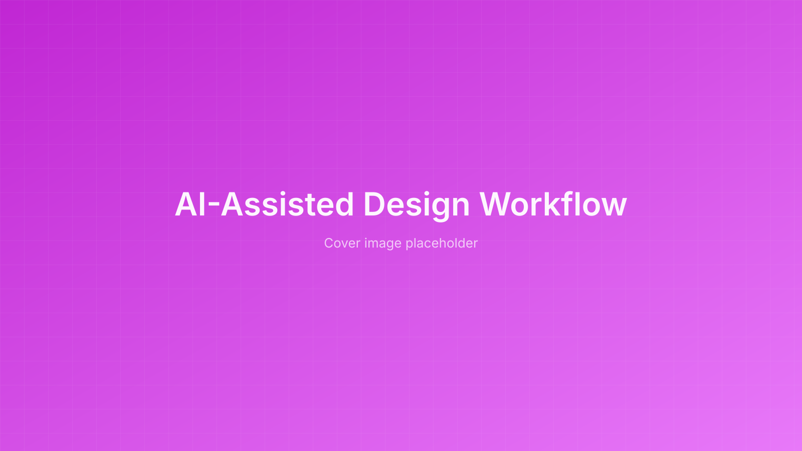

Matching Workflow to Problem: A Framework for AI-Assisted Design
Where AI compression actually fits in the design process, and where it gets in the way.
Executive Summary
After several months of using AI in my design work at Breeze, a UX and engineering retrospective on a small WiFi lookup project pushed me to formalize what I had been doing intuitively.
The retrospective surfaced a recurring pattern: complex problems benefit from human judgment guiding the process, while routine, well-defined problems can be handed off to agentic systems entirely. The middle ground is where most of my AI usage actually lives.
From that observation, I built a tiered framework that matches problem complexity to approach (from fully agentic at one end to human-led strategy at the other), plus an evolving toolchain that compounds context across sessions instead of resetting it.
The thesis: the skill shortens the time between judgment calls. It doesn't skip them.
Role:
UX Designer, Process Lead
Duration:
Ongoing
Responsibilities:
Process design, AI workflow, retrospective facilitation
Introduction
A Retrospective That Turned Into a Framework
I had been experimenting with AI in my design work for months, but the conversations about it inside my team were anecdotal. Fragmented demos, isolated wins, no shared frame for when AI was actually helping versus when it was adding overhead.
A small UX and engineering collaboration on a WiFi lookup feature turned out to be the right size and shape to surface the underlying pattern. What started as a project retrospective became a framework for how design effort scales with problem complexity, and where AI compression fits inside that.
The Spark
Anonymous WiFi Lookup: A Known Pattern With Fuzzy Edges
Guests on Breeze flights were struggling to connect to in-flight WiFi. The fix was conceptually simple: let guests connect anonymously by entering their PNR and last name. Most of the project was a known UI pattern; the interesting parts were the edges: error states, redirect paths for guests without WiFi entitlements, adjacent screens that needed quick improvements.
How We Actually Worked Together
The project ran in three loose phases:
- Separate prep. Both the developer and I independently started from the same existing UI pattern. I generated a quick prototype; the developer had a branch going.
- Pairing call. We converged on a working session to hash out the ambiguous parts: error states, redirect flows, edge cases.
- Opportunistic audit. While we were in the code, we spotted and made quick improvements to adjacent screens.
What We Learned About Where Effort Was Actually Paying Off
The wasted effort: we both independently built the first screen, which was a known pattern with no ambiguity. Neither of us wanted to start from zero, so we duplicated work that only needed to happen once.
The real value was in the ambiguous decisions: where to redirect guests without WiFi, how to handle errors, what to opportunistically improve nearby. The value of pairing wasn't in building the obvious screen together. It was in navigating the decisions around it.
The Framework
Problem Complexity Tiers
The WiFi project was a known pattern with fuzzy edges. One working session resolved it. But not every problem fits that shape. Some can be handed off entirely; others need deep human framing before any work begins. The framework below names tiers of problem complexity and matches each to an appropriate approach, from agentic execution at one end to human-led strategy at the other.
| Problem Type | Approach | Artifact |
|---|---|---|
| Routine | Agent owns end to end; human verifies | PR / merge request |
| Bounded | Working session: human and AI pair through fuzzy edges | MR from the session |
| Specifiable | Human writes the brief; AI compresses exploration; dev builds | Markdown spec + reasoning files |
| Open-ended | Human leads the design; AI compresses research and options | Figma + spec + prototype |
Where AI Compression Actually Helps
Once the tiers are named, where AI fits becomes obvious. So does where it doesn't.
- Routine: pure agentic territory. The work is well-defined enough to fully hand off; the human's job is to verify the result.
- Bounded: lightweight pairing. AI can generate the obvious starting points, but the value is in human judgment about the ambiguous edges.
- Specifiable and Open-ended: the sweet spot. AI compresses research, exploration, and specification while human judgment leads the framing and refinement.
Complex problems are better handled with human judgment guiding the process; routine, well-defined problems can be handed off to agentic systems.
Compressed Design Thinking
The Three Phases I Compress, Adapted From a Designer at Redo
The work that AI accelerates breaks into three phases. They map to the same beats as traditional design thinking, just compressed:
Phase 1
Build context
Synthesize the problem space, constraints, domain knowledge, and existing patterns into a shared frame. This is the most expensive part of design work and the part AI compresses most reliably.
Phase 2
Explore solutions
Generate and evaluate competing approaches. Surface tradeoffs between options rather than converging too early. The goal is breadth before depth.
Phase 3
Refine for reality
Narrow to a direction. Pressure-test against feedback, alignment, and technical feasibility. This is where human judgment carries the most weight.
The Toolchain
Current Artifacts That Travel With the Work
The compressed workflow produces three kinds of artifacts that survive past a single session:
Artifact
Markdown specs
Problem framing, decision logs, edge case inventories. They build the reasoning foundation and become the source of truth that other artifacts derive from.
Artifact
JSX prototypes
Lightweight interactive prototypes for refining interactions and testing ideas before committing to a Figma file. Faster to iterate on; closer to the medium the work ships in.
Artifact
Design rationale
Captures all reasoning from the session. Travels to dev as implementation context. Helps me recover context after switching tasks.
Platform Evolution
From Single Sessions to a Compounding System
The platform I run this on has gone through three stages, each addressing a limitation of the last.
Stage 1
Claude Chat
Quick prototyping and design thinking compression. Worked for single sessions, but context resets between chats. Diminishing returns on complex problems.
Stage 2
Claude Chat Projects
Organized artifacts into projects. Better for managing related work over time. Still stateless across sessions; no way to feed in external context like meeting notes or domain knowledge.
Stage 3
Claude Code + Obsidian
Connected to a personal knowledge base. Meeting notes, past sessions, and domain knowledge feed the same system. Work compounds instead of resetting.
Stop resetting context, start compounding it.
Applying the Framework
What This Framework Is and Isn't For
The framework's job is to keep me from over-investing human judgment in routine work and under-investing it in complex work, and to make my AI usage match the shape of the problem instead of the shape of the tool.
The skill shortens the time between judgment calls. It doesn't skip them.